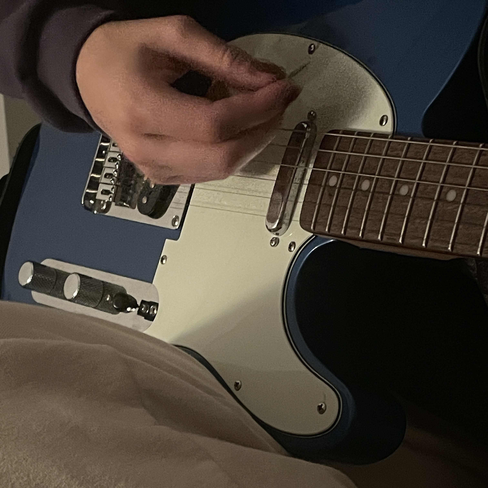
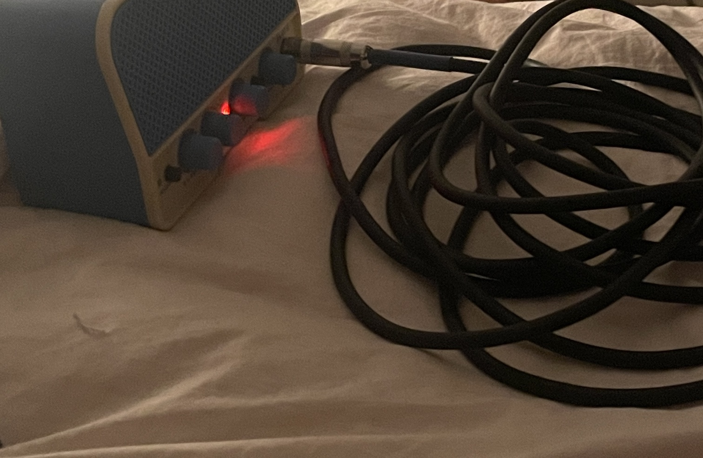

Geese swimming by the tiny "beach" near my apartment. Their life is simple. So is mine.
Listen to some sort of convoluted recording of Lily and I playing as you scroll along.
“Wait, let me just see if I can try to make it work.”
Lily tries out a couple different chords, barring them with her finger. I didn’t fully realize that in order to use a capo on one guitar when playing together, you have to use them on both. I tell her I can just take mine off (though it's actually hers that I borrow)- the song isn’t too low for me. I ask her if there’s anything else she wants to play instead, in response she asks what my idea for her teaching me was, what I wanted to get out of it. I don’t really have a response.
In the past few years, I have become increasingly involved with music. Around my junior year of high school, I started to listen to more music (what I would now consider “good” music) and became friends with a lot of kids involved in the music scene there. However, my greatest frustration and insecurity within this is that I can’t really engage. I played piano growing up, but only classical (taught by my teacher Olga, who would always make sure to wash her hands after petting my dog). I’ve felt like an outsider because of my inability to play anything (though it feels more like my inability to contribute anything), so I decided to take action. I bought a cheap guitar off of Facebook Marketplace from a man who told me that “the first few months are the hardest, stick with it”. I didn’t tell any of my friends friends- I felt if I told anyone that I was trying to learn, even their most minimal expectations would overwhelm me. The only exception to this, however, is Lily, my dear friend and roommate. She has a voice that must be God’s gift to earth, but I have never really felt self conscious playing or singing with her. I’m unsure why my brain decided that around her it doesn’t matter how I sound (a testament to her character), but I try not to second guess it. So then, I guess what I wanted to get out of this was just to play with her and learn from her by doing.

We play a song that reminds me of myself two years ago. A few days ago I found the first time I listened to it. It was two years on the dot. Lily harmonizes with me; I have trouble keeping my melody consistent as she sings a higher one, but it goes more smoothly than it has in the past. She adds some melodies on her guitar, an electric guitar that’s blue and plugged into a similarly colored tiny amp. I’ve messed around on her electric guitar before- it was the first time I had ever played one. I understood the pull towards it that many people experience. Sometimes I wonder if I could be furthering my technical skills more on an electric than an acoustic, but it seems silly to buy one without more people to play with.
Lily shows me her secret Soundcloud page. She had mentioned it before, and I’ve given certain songs a listen, but I didn’t realize just how much she’s uploaded. She plays up certain ones as examples of songs she can’t remember how to play anymore, songs about her ex, songs that she doesn’t like anymore. They have a cutting yet vulnerable honesty: a certain softness that I’ve never really encountered before.

When I ask her why she doesn’t upload these to a more accessible platform like Spotify, she says that
“they don’t feel ready yet, you know?”
I disagree, giving examples of a certain guilty pleasure artist that has rerecorded (and reused material from) many of his songs- sometimes as many as three times- rereleasing them on new records. I find it’s a really beautiful thing to be able to track what has changed about the songs throughout- there’s probably some connection to the change in himself. I think I almost convinced her to do the same (I’ll try again soon).
I recorded us playing the songs and left it running for the ensuing conversation. The recording is forty five minutes long. Listening back to it is the first time I have properly listened to myself singing. I don’t cringe. I think it actually sounds pretty nice.